Rasteau, Cairanne et Massif d’Uchaux, vallée du Rhône
Une histoire de famille, depuis 1920.
Un domaine viticole familial au cœur de la vallée du Rhône, certifié en agriculture biologique et conduit en biodynamie. Marine et Paul, quatrième génération, y travaillent aux côtés de leur père, Robert Charavin.
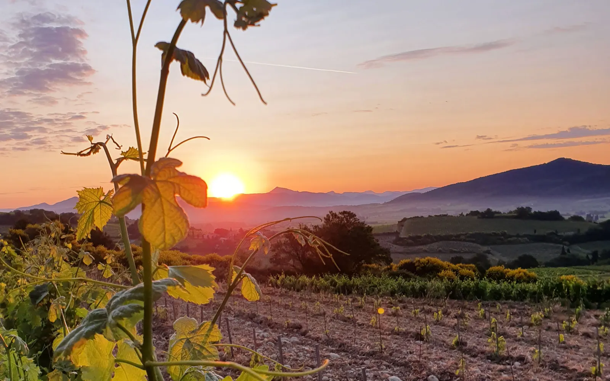
- 1920les premières vignes de la famille
- 10 hasur la commune de Rasteau
- 2 hasur la commune de Cairanne
- 30 hasur le Massif d’Uchaux, acquis en 2017
- 2018certification Biodyvin, bio depuis 2010
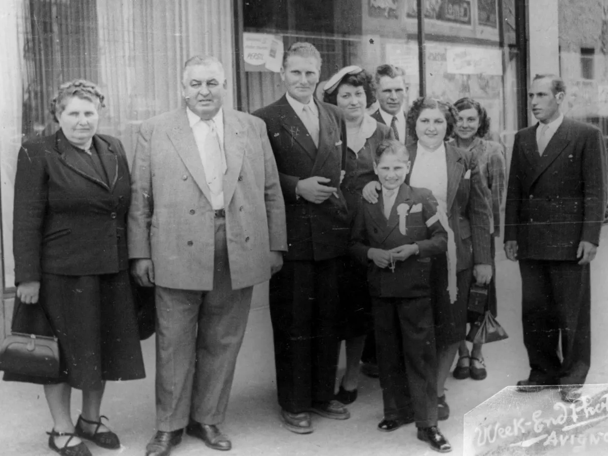
Les Charavin, de père en fils et fille
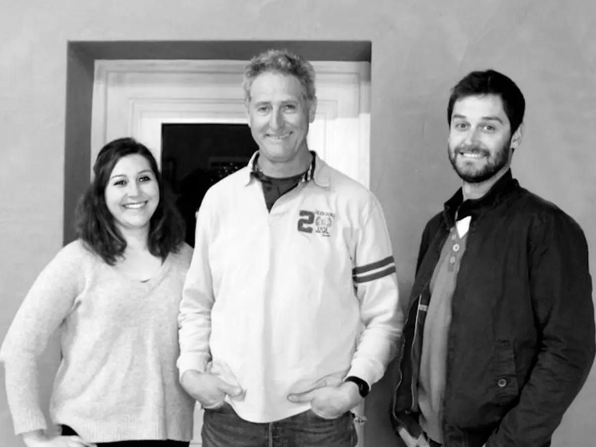
Plus de 100 ans de vigne, de génération en génération.
Le nom du domaine vient du mot « Travers », le côté exposé au soleil levant.
Attaché à la préservation des sols et à l’expression naturelle des terroirs, Robert Charavin a engagé le vignoble dans l’agriculture biologique, puis dans la biodynamie. Marine, docteure en chimie organique thérapeutique, est revenue au domaine pour approfondir la vinification. Paul, ingénieur en génie industriel, se consacre surtout au travail de la vigne.
- 1920L’arrière-grand-père de Marine et Paul plante les premières vignes.
- 1976Robert Charavin Senior commercialise les premières bouteilles de la propriété.
- 1984Son fils Robert reprend le domaine et lui donne un nouvel élan.
- 2010Certification en Agriculture Biologique.
- 2016Marine et Paul, quatrième génération, rejoignent l’exploitation.
Un terroir aux identités complémentaires.
Des parcelles réparties sur plusieurs terroirs de la vallée du Rhône méridionale. Cette diversité géologique donne des vins biologiques aux profils complémentaires, marqués par chaque appellation.
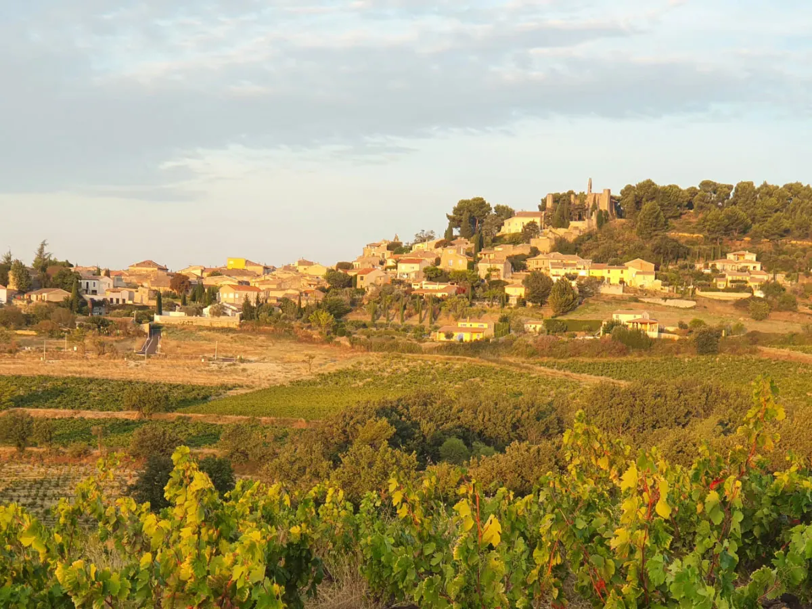
-
10ha
Rasteau, des coteaux plein sud
Une quinzaine de parcelles, surtout exposées plein sud. Des sols riches en argile, qui donnent des vins structurés, généreux et profondément liés à leur terroir.
-
2ha
Cairanne, argile rouge et garrigue
Un vignoble regroupé au sud de l’appellation, sur un sol argilo-limoneux de garrigue très riche en fer. Cette terre rouge a inspiré le nom de la cuvée « Terra Rosea ».
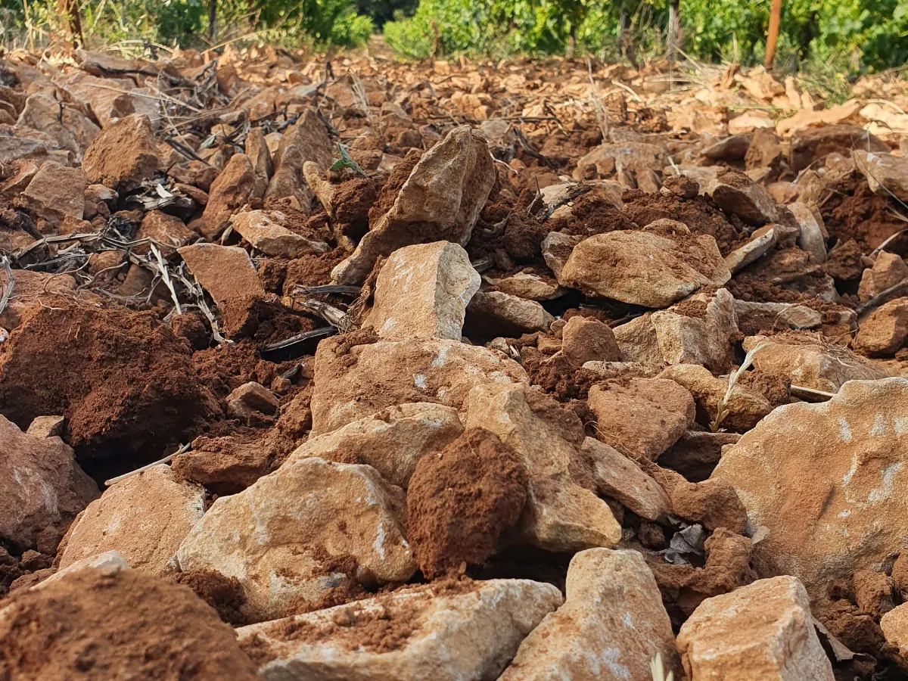
-
30ha
Le Massif d’Uchaux, sableux et singulier
Acquises en 2017 au point culminant de l’appellation, vers 280 mètres d’altitude, ces parcelles sont en restructuration : 7,5 hectares déjà replantés. Des sols sableux, rouges, très peu calcaires, couverts de pierres plates, les « lauzes ».
Savoir-faire & biodynamie
Le domaine est certifié en Agriculture Biologique depuis 2010 : pas de produits chimiques de synthèse, une attention constante à la vie des sols, à la biodiversité et à l’équilibre du vignoble. Il a ensuite adopté les principes de la biodynamie, et bénéficie de la certification Biodyvin depuis 2018.
Depuis le passage en biodynamie, le domaine a observé le retour de plusieurs insectes : lombrics, araignées, coccinelles.
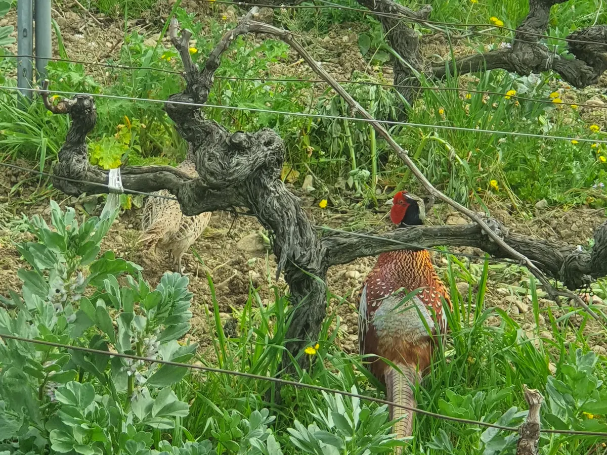
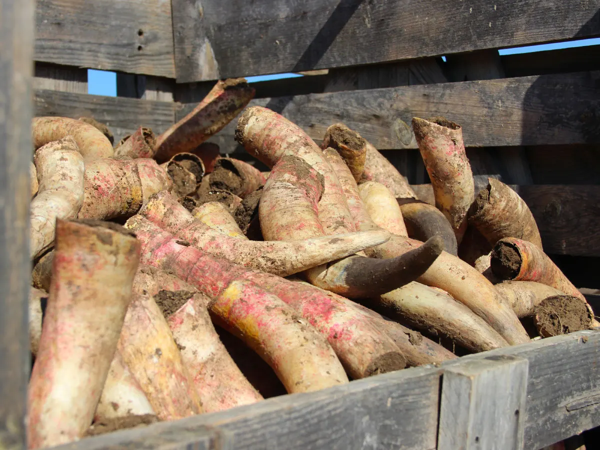
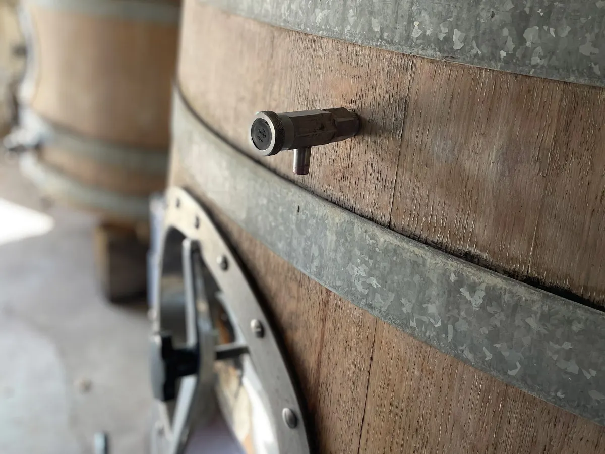
L’agroforesterie
Des arbres plantés en bordure et au sein des parcelles, des nichoirs et des perchoirs à rapaces, pour rappeler les prédateurs naturels des nuisibles de la vigne.
Des vendanges à la main
Un tri à la parcelle, puis sur une table de tri vibrante à l’arrivée au chai.
Une cuverie variée
Bois, béton, acier émaillé et fibre de verre. Depuis 2016, des amphores et des œufs en terre cuite pour les vins blancs.
Mis en bouteille au domaine
Une maîtrise complète de la production, de la vigne jusqu’à la commercialisation.
Nos vins
Une sélection de vins biologiques issus de plusieurs appellations de la vallée du Rhône. Chaque bouteille traduit l’identité de son terroir, le travail fait dans les vignes et l’engagement familial du domaine.
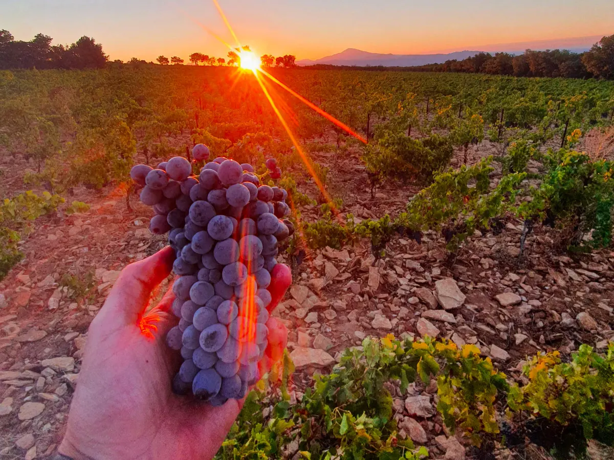
Rasteau
Coteaux plein sudDes vins structurés et généreux, nés de sols riches en argile.
Cairanne
Argile rougeUne identité méditerranéenne : fraîcheur, finesse et expression aromatique.
Côtes du Rhône Villages
Blanc et rougeLes deux couleurs de l’appellation.
Massif d’Uchaux
Sables rougesDes vins élégants, frais et équilibrés.
Zouzou
La gamme Zouzou
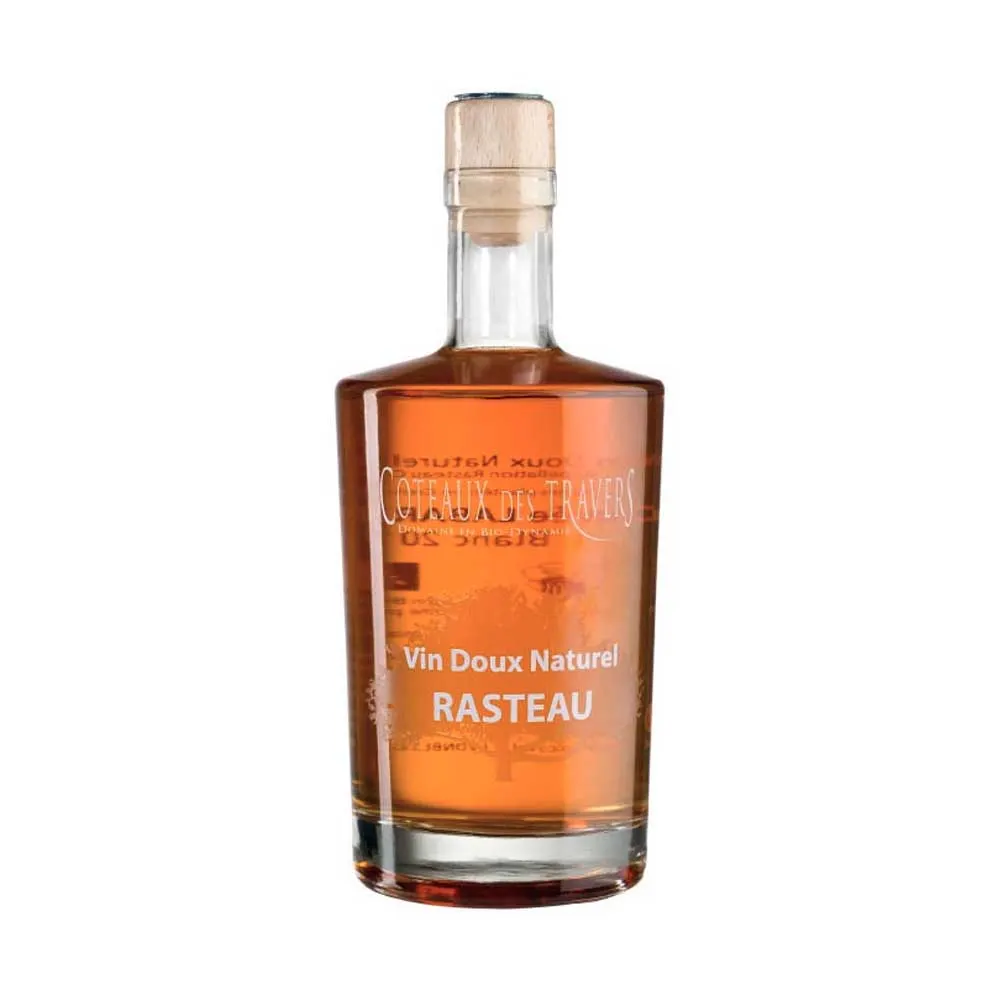
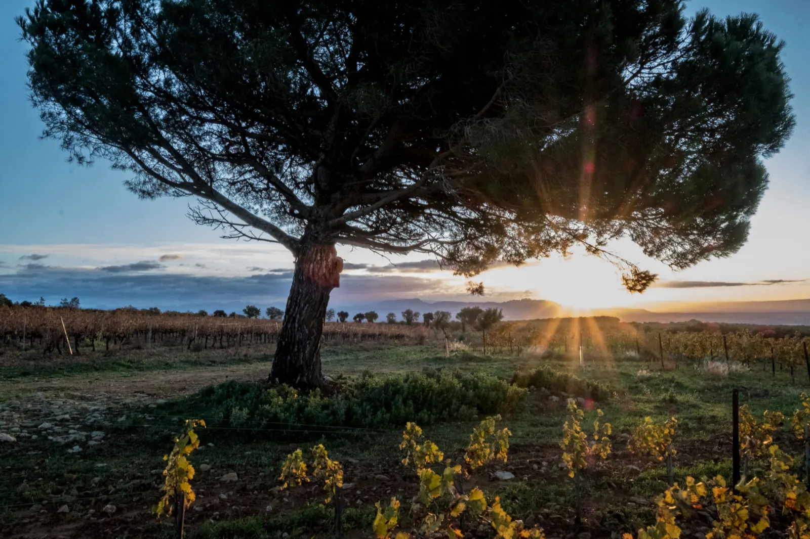
Venir au caveau
À l’entrée du village de Rasteau depuis 1970, le caveau est un lieu de dégustation et de vente directe : Robert, Marine ou Paul vous y conseillent. Vous pouvez aussi commander en ligne et retirer vos vins au domaine (click and collect).
- Adresse
- 15, route de la cave
84110 Rasteau - Téléphone
- 04 90 46 13 69
- Groupes
- Pour les dégustations ou les visites en groupe, merci de téléphoner au préalable.